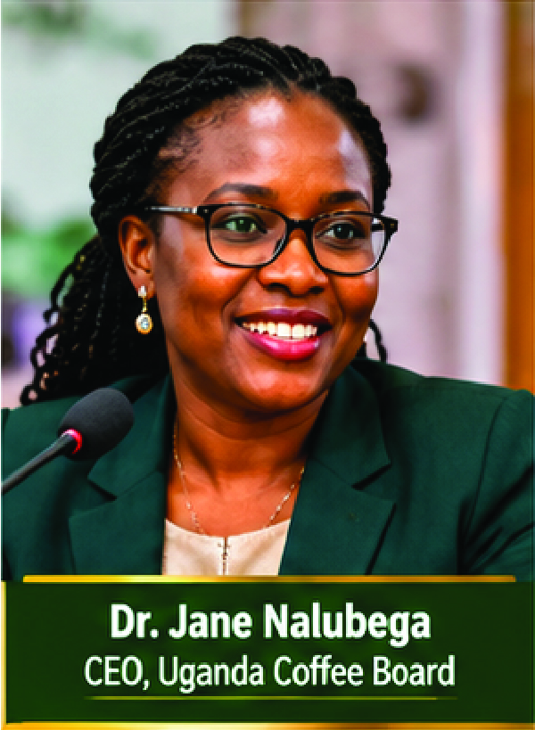
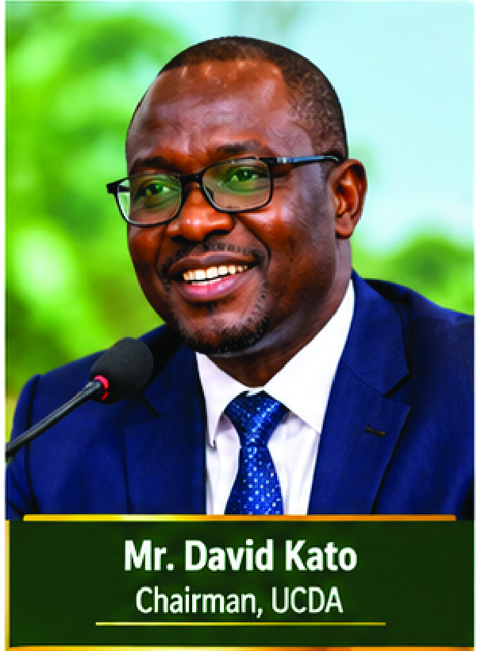
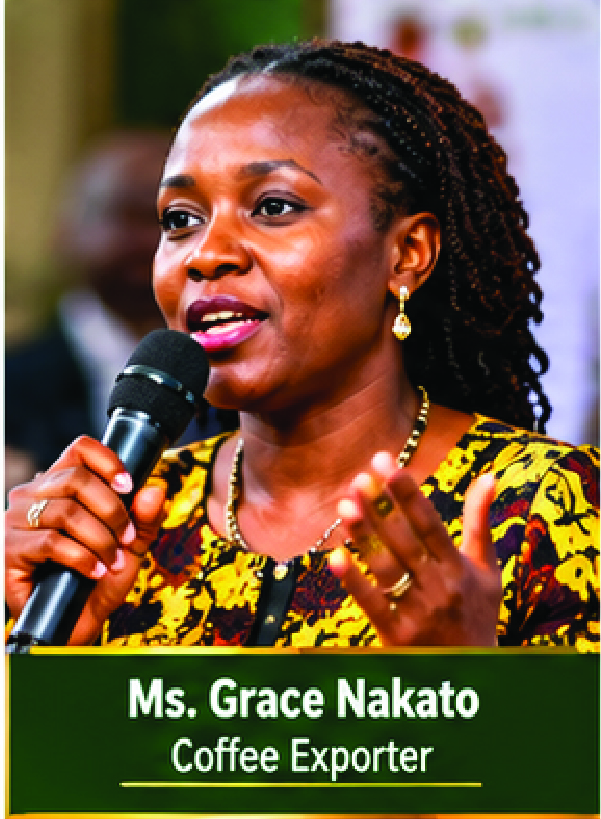
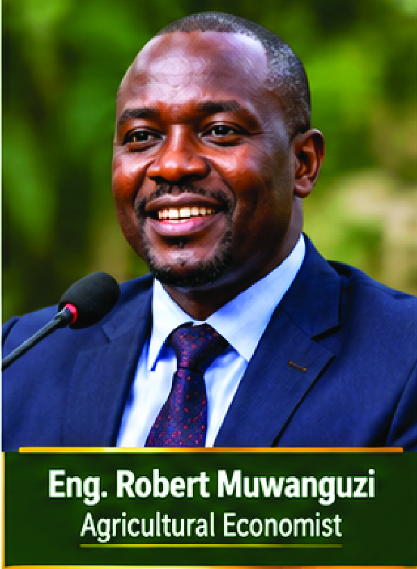

Dr. Jane Nalubega
CEO, Uganda Coffee Board
Dr. Nalubega leads national efforts to promote Uganda's coffee sector, strengthen market access and build sustainable value chains for producers and exporters.

CEO, Uganda Coffee Board
Dr. Nalubega leads national efforts to promote Uganda's coffee sector, strengthen market access and build sustainable value chains for producers and exporters.

Chairman, Uganda Coffee Development Authority (UCDA)
Mr. Kato advocates for policy support, farmer-focused development and improved productivity across Uganda's coffee industry.

Coffee Exporter
Ms. Nakato connects Ugandan coffee producers with regional and international buyers while promoting quality, traceability and ethical trade.

Agricultural Economist
Eng. Muwanguzi analyzes agricultural investment, production costs and value-chain opportunities to support resilient and profitable coffee enterprises.
| Name | Organisation | Country | Session Title |
|---|---|---|---|
| Mary Auma | AgriClimate Network | Uganda | Climate-Smart Agriculture |
| Daniel Mugisha | Value Add Africa | Uganda | Value Addition |
| Agnes Namuli | Rural Enterprise Finance | Uganda | Financing Coffee Enterprises |
| Michael Otieno | Trade Development Forum | Kenya | Regional Coffee Markets |
Researchers and industry professionals are invited to submit original papers on coffee production, processing, quality, trade, sustainability and innovation. Submissions should explain their objectives, methods and findings.
Authors should include their names, affiliations and contact information with a concise abstract. Accepted contributors will receive presentation instructions from the organisers.
| Milestone | Date | Status |
|---|---|---|
| Call for Papers Opens | 1 March 2026 | Closed |
| Abstract Submission Deadline | 30 June 2026 | Closed |
| Acceptance Notification | 31 July 2026 | Completed |
| Final Paper and Presentation Submission | 20 August 2026 | Closed |
| Speaker Briefing and Technical Check | 15 September 2026 | Completed |
| Uganda International Coffee Expo | 16–18 September 2026 | Completed |
| Post-Expo Proceedings and Report Published | 15 December 2026 | Scheduled |
| Next Uganda International Coffee Expo | 15–17 January 2027 | Scheduled |